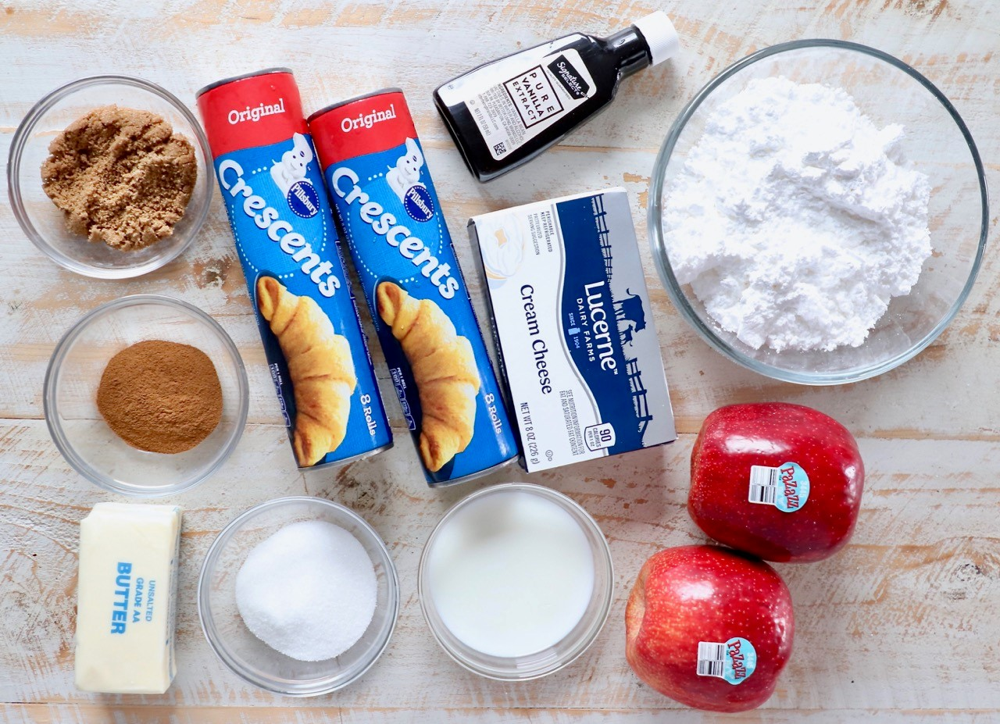
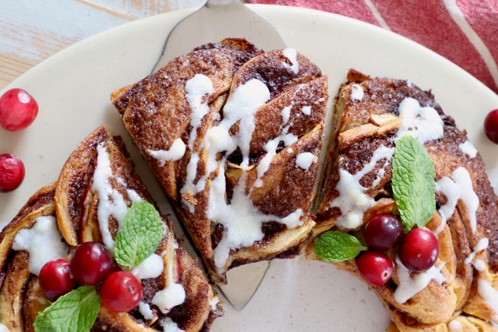

Cinnamon Rolls Wreath with Apple Recipe

Ingredients
- Crescent roll dough
- Granulated sugar
- Brown sugar
- Ground cinnamon
- Unsalted butter
- Pazazz apples
- Cream cheese
- Milk
- Vanilla extract
- Powdered sugar

Instruction
- Roll out the crescent roll dough - Place both sheets of crescent roll dough and press the seams together to form one large crescent roll rectangle.
- Top with the cinnamon sugar butter - Combine softened butter with granulated sugar, brown sugar and ground cinnamon. Spread this mixture evenly across the crescent roll dough.
- Add the apples - Slice one Pazazz apple, then place the slices on top of the cinnamon sugar butter in an even layer.
- Roll it up - Roll the crescent roll dough up tightly over the apples and the cinnamon sugar butter into a tube.
- Slice it in half - Use a sharp knife to slice lengthwise through the middle of the cinnamon roll tube.
- Separate the two halves - Separate the two halves, and make sure the cinnamon butter and apples are facing up on both halves.
- Braid them together - Carefully braid the two halves together, lifting one half over the other, then vice versa until it's rolled up into one long braid.
- Form the wreath - Bring the two ends of the braid together to form the wreath, then transfer the wreath on the parchment paper over to a baking sheet. Bake at 350°F for 20-25 minutes, or until the entire cinnamon roll wreath is golden brown.